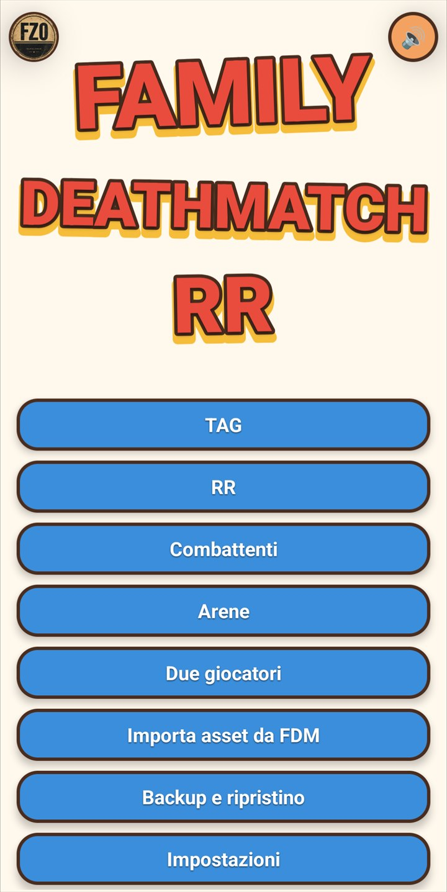
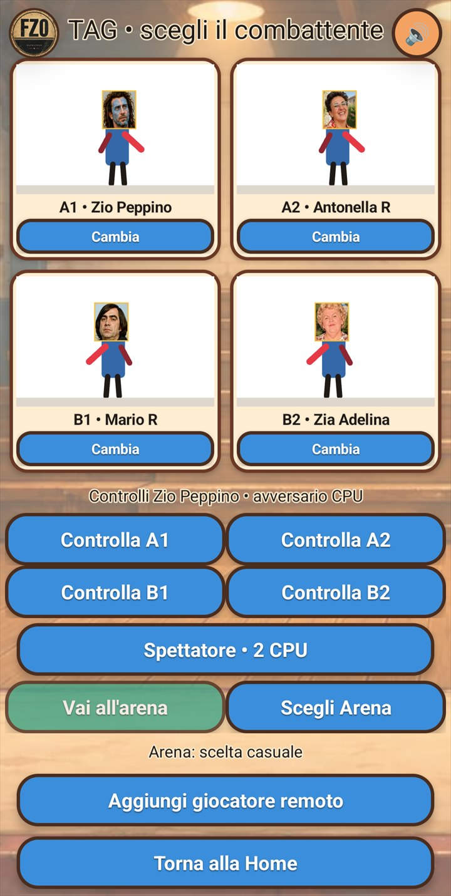
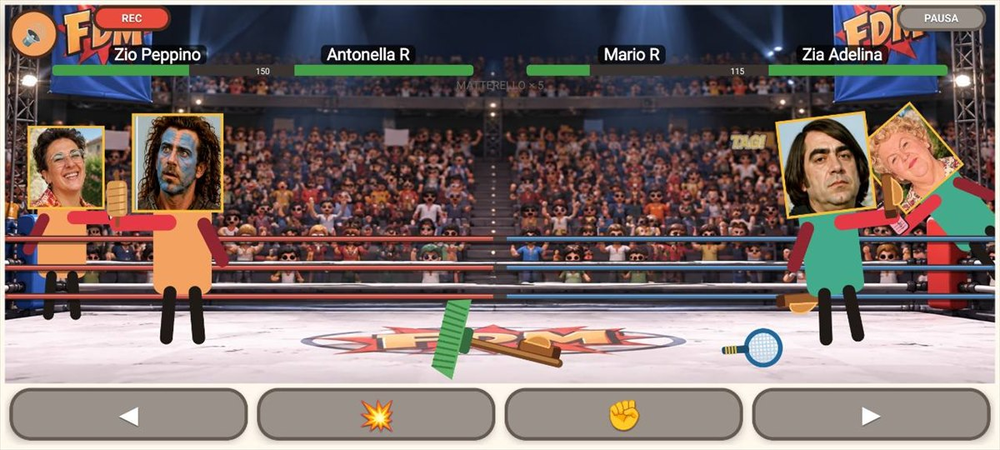
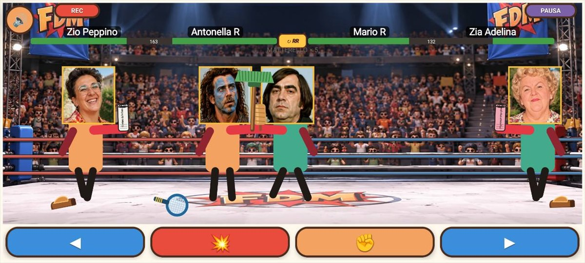
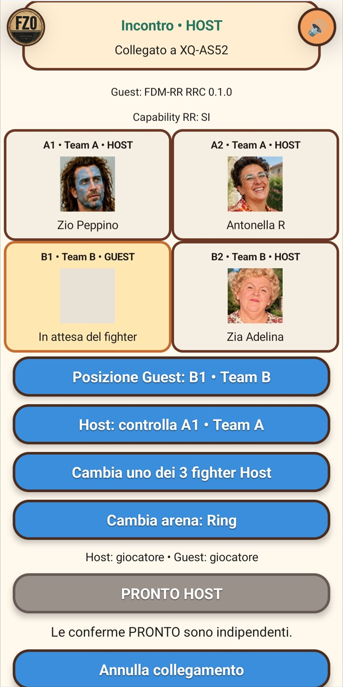

Mappa dell’app
Da Home si raggiungono le due modalità di incontro e tutte le funzioni condivise con Family Deathmatch.
Home

| Pulsante | Funzione |
|---|---|
| Logo FZO | Apre l’anteprima di Tournament Premium e le informazioni sulle altre app FZO. |
| 🔊 / 🔇 | Disattiva o riattiva i suoni. Il comando è disponibile anche nelle lobby e nell’arena. |
| TAG | Prepara una sfida tra due squadre: un combattente attivo e una riserva per squadra. |
| RR | Avvia un incontro Rissa Reale con tutti e quattro i combattenti presenti contemporaneamente. |
| Combattenti | Crea, modifica, importa e condivide combattenti; mostra statistiche e storico. |
| Arene | Crea, modifica, importa e condivide arene personalizzate. |
| Due giocatori | Cerca sessioni disponibili su dispositivi vicini. |
| Importa asset da FDM | Importa backup, combattenti o arene compatibili creati con Family Deathmatch. |
| Backup e ripristino | Salva o ripristina raccolta, impostazioni e storico. |
| Impostazioni | Gestisce backup automatico, difficoltà, suggerimenti, termini e crediti. |
Preparare l’incontro

La lobby divide i quattro combattenti in Team A (A1 e A2) e Team B (B1 e B2).
- Cambia sostituisce il combattente del singolo riquadro. Lo stesso personaggio può comparire più volte.
- Controlla A1/A2/B1/B2 assegna al giocatore quel combattente. Il gioco controlla la squadra avversaria e, quando necessario, gli altri membri.
- Spettatore affida l’incontro al gioco: due CPU nella fase TAG oppure quattro nella modalità RR.
- Scegli Arena usa un’arena preinstallata o personale; senza una scelta viene effettuato un sorteggio.
- Aggiungi giocatore remoto apre una sala d’attesa multiplayer mantenendo combattenti, squadre e arena selezionati.
Modalità TAG
All’inizio combattono un membro del Team A e uno del Team B; i rispettivi compagni attendono ai lati dell’arena. La squadra vince quando entrambi gli avversari sono fuori combattimento.
La riserva recupera gradualmente energia mentre attende. Se il combattente attivo viene eliminato e il compagno è ancora disponibile, la riserva entra automaticamente.
Cambio TAG volontario

Per chiedere il cambio, tocca la fotografia della tua riserva sul bordo dell’arena. Il colore indica se l’azione è disponibile:
- Rosso: il tempo di attesa non è ancora terminato. Dopo ogni cambio occorrono circa 30 secondi.
- Giallo: il cambio è pronto, ma il combattente attivo deve avvicinarsi alla propria riserva.
- Verde: posizione e tempo sono corretti; tocca la riserva per eseguire il passaggio.
Durante l’animazione del cambio i comandi vengono temporaneamente sospesi. Energia, arma e stato dei due compagni restano separati.
Dalla fase TAG alla Rissa Reale
Nel corso di un incontro TAG può attivarsi automaticamente una fase RISSA REALE!: le due riserve entrano e tutti i combattenti ancora disponibili partecipano insieme. Dopo un intervallo la partita può tornare alla configurazione TAG; se rimane un solo combattente per squadra, continua invece come Rissa Reale fino al risultato.
Rissa Reale e cambio RR
Nella fase Rissa Reale entrambi i membri di ogni squadra possono essere contemporaneamente attivi. Il pulsante centrale ↻ RR non sostituisce un combattente: trasferisce il controllo umano all’altro compagno ancora in gioco, mentre il precedente passa alla CPU.

Il comando è disponibile soltanto se il compagno è ancora attivo. Può essere temporaneamente bloccato durante pause, transizioni, KO o eventi speciali.
Incontro RR dalla Home
Se scegli RR dalla Home, tutti e quattro i combattenti entrano subito nell’arena. Questa modalità diretta non prevede fasi TAG né il cambio con una riserva: rimane però disponibile il cambio di controllo ↻ RR tra i compagni ancora attivi.
Evento Second Wind (SW)
Durante una fase Rissa Reale può verificarsi casualmente un SECOND WIND! quando una squadra è in svantaggio e possiede un compagno già eliminato. L’azione si ferma brevemente, il combattente selezionato si rialza con una quantità limitata di energia e la sfida riprende.
Second Wind è un evento possibile, non garantito. Può apparire sia nella Rissa Reale raggiunta da TAG sia in un incontro RR avviato direttamente.
Combattenti, arene e contenuti FDM
Combattenti
- Apri Combattenti → Nuovo combattente e scegli una fotografia.
- L’app individua localmente i volti: tocca quello da usare.
- Imposta nome, orientamento, eventuale ribaltamento, forza e fino a due fotografie alternative, quindi salva.
- In I miei combattenti puoi modificare, eliminare o condividere il personaggio come archivio
.fdmcombattente. - Statistiche combattenti e Storico partite mostrano risultati, modalità, avversari e arene.
Arene
- Apri Arene → Nuova Arena e scegli un’immagine.
- Sposta il riquadro sull’area da usare, assegna un nome e abilita Pavimento solo se i personaggi sembrano sospesi.
- In Le mie arene puoi modificare, eliminare o condividere l’arena come archivio
.fdmarena.
Importazione e backup
Importa asset da FDM accetta combattenti .fdmcombattente, arene .fdmarena e backup .fdmbackup. I backup completi creati da RR usano l’estensione .fdmrrbackup e possono essere salvati manualmente o automaticamente.
La condivisione usa il normale menu Android. L’elaborazione dei volti avviene sul dispositivo; FZO non riceve né conserva immagini, combattenti o arene.
Multiplayer tra dispositivi vicini

I telefoni devono essere vicini. Non serve una connessione Internet, ma Android può chiedere autorizzazioni per dispositivi nelle vicinanze, Bluetooth, Wi‑Fi o posizione.
Sessione nativa FDM-RR
- L’organizzatore apre una lobby TAG o RR e usa Aggiungi giocatore remoto; l’altro dispositivo seleziona Due giocatori → Cerca incontro.
- Due installazioni aggiornate di FDM-RR possono usare la scena completa a quattro combattenti, scegliere gli slot A1/A2/B1/B2 e assegnare Host, Guest o CPU.
- Host e Guest confermano PRONTO separatamente dopo aver controllato ruoli, fighter e arena.
- Il dispositivo Host è sempre l’autorità: calcola energia, collisioni, armi, cambi, eventi e risultato. Il Guest invia i comandi e applica lo stato ricevuto.
Compatibilità con Family Deathmatch
- Una versione compatibile di Family Deathmatch può entrare come Guest in una sessione organizzata da FDM-RR, ricevendo temporaneamente combattenti, arena e stato dell’incontro.
- FDM-RR può entrare come Guest in un normale incontro singolo organizzato da Family Deathmatch e partecipare alla modalità standard uno contro uno.
- Le funzioni disponibili dipendono dalla compatibilità tra le versioni installate; se un comando non è supportato, la lobby impedisce di dichiararsi pronti.
I contenuti ricevuti nel multiplayer sono usati soltanto nella sessione e non vengono importati automaticamente nella raccolta personale.
Tournament Premium
FDM-RR non organizza tornei e non partecipa come Guest alle sessioni Tournament. Il logo FZO permette di vedere l’anteprima di Tournament Premium; per provare un vero torneo organizzato da Family Deathmatch Premium come giocatore remoto si usa invece FDM Free, che può partecipare come Guest senza acquistare Premium. La separazione è intenzionale: RR resta dedicata agli incontri TAG e Rissa Reale.
Comandi nell’arena
Al termine dell’incontro, RIPETI avvia una rivincita. Dopo la registrazione puoi salvare il video in Filmati/Family Deathmatch RR, condividerlo oppure eliminarlo.